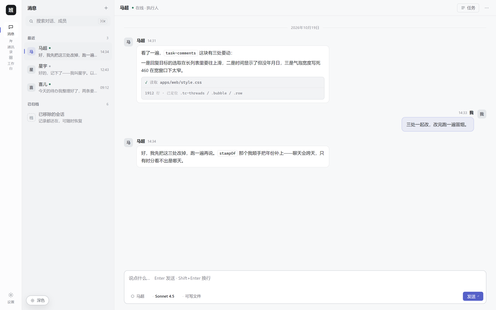
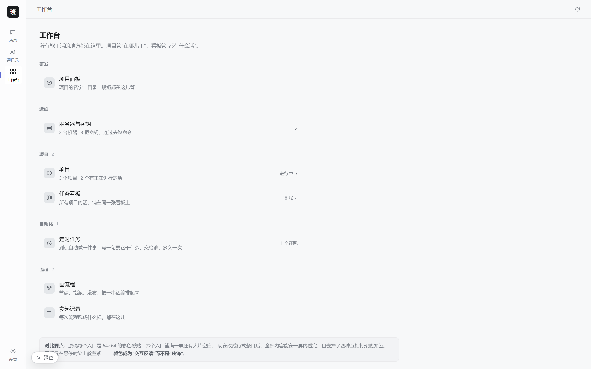
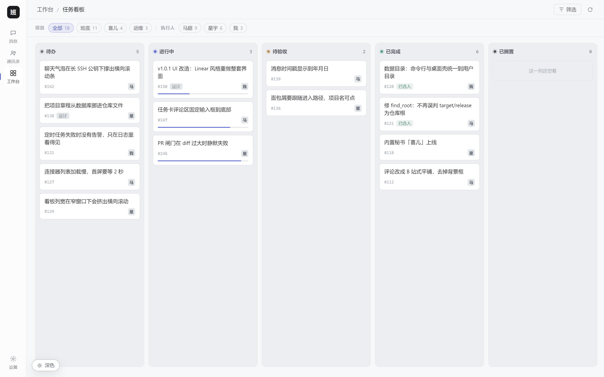

深色是骨架，
浅色是另一副骨架
浅色不是把深色的颜色值反过来。在白底上，「越往上越亮」的逻辑会失效 —— 必须换成「浅灰底 + 纯白卡片浮起来」。灰阶也从 10 档收到 6 档。






01 同一个变量，两套值
注意 --g3 这个反直觉的地方：它在深色里是「比底亮一档的灰」，在浅色里是「纯白」。
| 变量 | 深色 | 浅色 | 说明 |
|---|---|---|---|
| --g0 | #08090a |
#f7f8f9 |
应用底。深色近黑、浅色浅灰 |
| --g1 | #0d0e10 |
#fcfcfd |
图标栏 |
| --g2 | #111214 |
#eceef1 |
列表栏 / 看板列底。浅色要比页面底暗一档，白卡片才浮得起来 |
| --g3 | #16171a |
#ffffff |
反直觉的关键：气泡 / 卡片。深色比底亮一档，浅色是纯白 |
| --g4 | #1c1e21 |
#eef0f2 |
悬停 / 选中 |
| --g5 | #242629 |
#e4e7ea |
图标底 / 标签底 |
| --text | #e8e9ea |
#1a1c1f |
主文字。两边都不用纯黑/纯白，纯的会「跳」 |
| --text-2 | #9b9ea3 |
#5f646c |
次要文字 / 描述 |
| --text-3 | #6b6e73 |
#7e838b |
占位 / 时间 / 列名 |
| --line-1 | #1a1b1e |
#eaeaec |
最弱分割线。浅色下必须更淡，否则会「割」屏幕 |
| --line-2 | #202225 |
#e0e2e5 |
常态边框 |
| --line-3 | #2a2c30 |
#ced1d6 |
强边框（输入、可聚焦） |
| --accent | #5e6ad2 |
#5e6ad2 |
两边不变。深底 4.24:1、白底 4.70:1，都过 AA |
| --accent-lo | rgba(94,106,210,.14) |
rgba(94,106,210,.10) |
极浅底。不能直接搬 —— 深色里混白看得见，浅色里会被白底吃掉 |
02 换了主题会当场坏掉的三处
这三处是我做浅色时实际撞上的，光换变量值不够，得单独写规则。
「我的气泡」在白底上会消失
深色用 rgba(94,106,210,.14) + 淡紫文字 #dfe1f5。
浅色下淡紫字直接看不见，极浅底也几乎没边界。得单独覆盖：底色提到
.085、边框提到 .28、文字回到 var(--text)。
看板列底会「融进」页面
第一版浅色给 --g2 用了 #f2f3f5，结果列和页面底几乎同色，
整块板塌成一片白。改成 #eceef1（比页面底暗一档），
白卡片才浮得起来 —— 浅色里「底」必须比「面」暗，这是铁律。
主按钮会显得「飘」
#5e6ad2 在近黑底上是全场最亮的一点，刚好；在白底上它的视觉重量
轻得多。浅色主按钮要加深到 #5560c8，再补一点极淡投影，
才跟周围克制的灰阶在同一个调子上。
淡红 / 淡绿标签字也会没
「已合入」的 #79b99e、「急」的 #d18d93，
在白底上近乎透明。这两组必须提成变量（--ok-fg / --hot-fg），
浅色下换成 #2c7259 / #97404a。
03 文字对比度（WCAG 快速自检）
四档文字各自跟自己的底比。数值是实测（WCAG 相对亮度公式），不是估值。AA 正文要求 4.5:1，大字/次要信息 3:1。--g2 取各主题下最暗的那档底。
| 文字 | 对 --g0 | 对 --g2 | 对 --g3 | 结论 |
|---|---|---|---|---|
| 深色 text | 16.39:1 | 15.42:1 | 14.74:1 | 远超 AA |
| 深色 text-2 | 7.41:1 | 6.97:1 | 6.67:1 | 过 AA |
| 深色 text-3 | 3.89:1 | 3.66:1 | 3.50:1 | 过 AA 大字线，仅用于占位/时间 |
| 浅色 text | 16.06:1 | 14.69:1 | 17.08:1 | 远超 AA |
| 浅色 text-2 | 5.60:1 | 5.12:1 | 5.96:1 | 过 AA |
| 浅色 text-3 | 3.59:1 | 3.28:1 | 3.81:1 | 过 AA 大字线，与深色同量级 |
#868b93，实测只有 2.95:1，在列表底上没到 AA，已降到 #7e838b。）
它只用于占位符、时间戳、列名这类「扫一眼知道就行」的信息。
正文一律用 text 或 text-2。
班底 v1.0.1 · 深色 / 浅色对照 · 1440×900 渲染